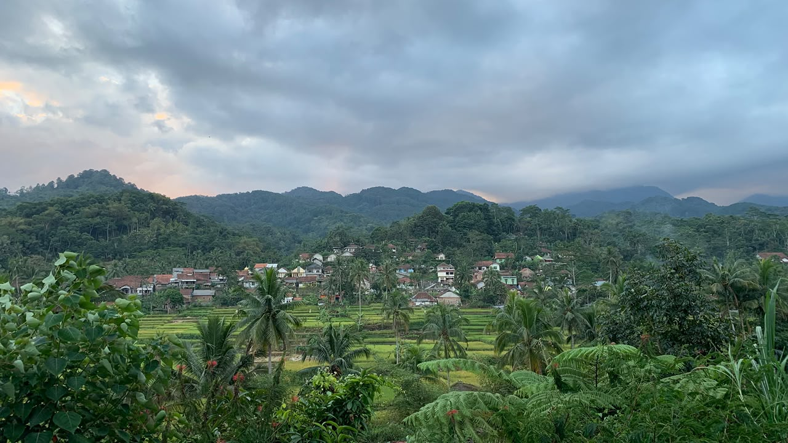
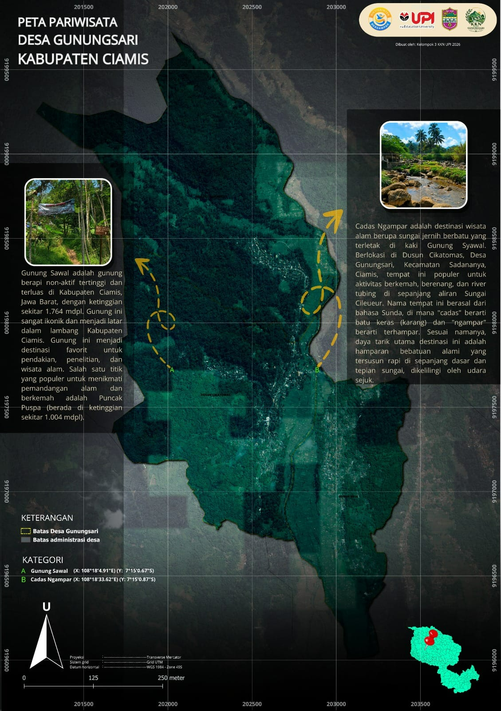
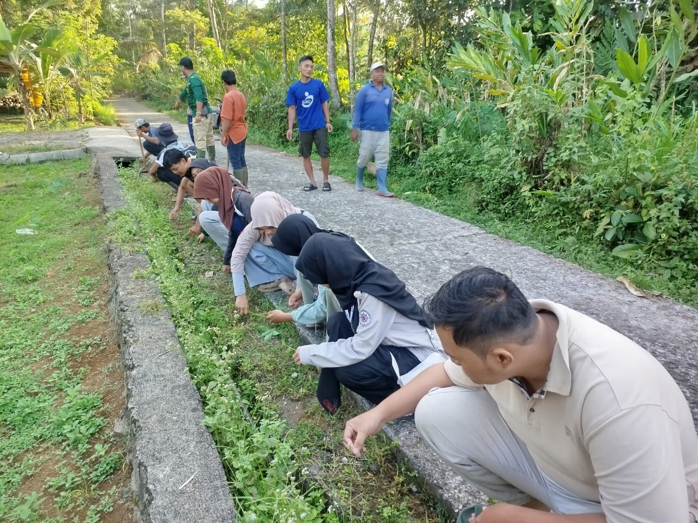
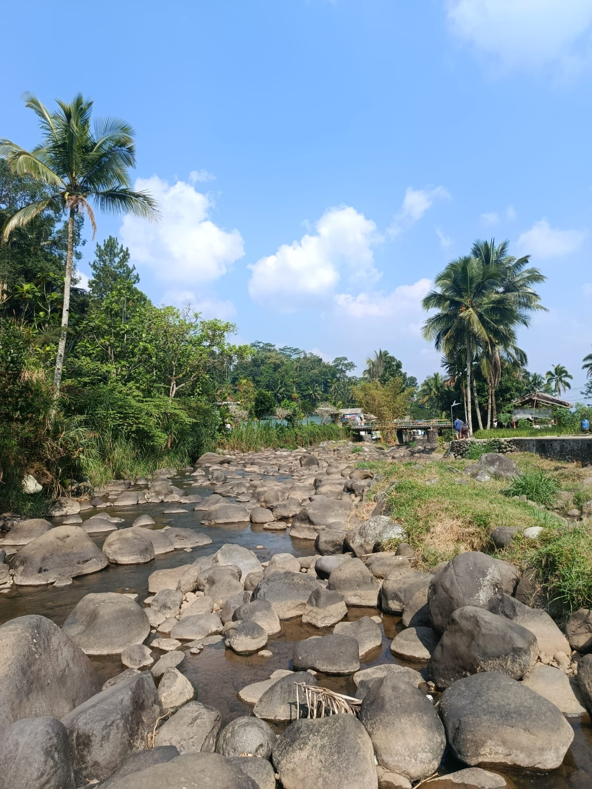
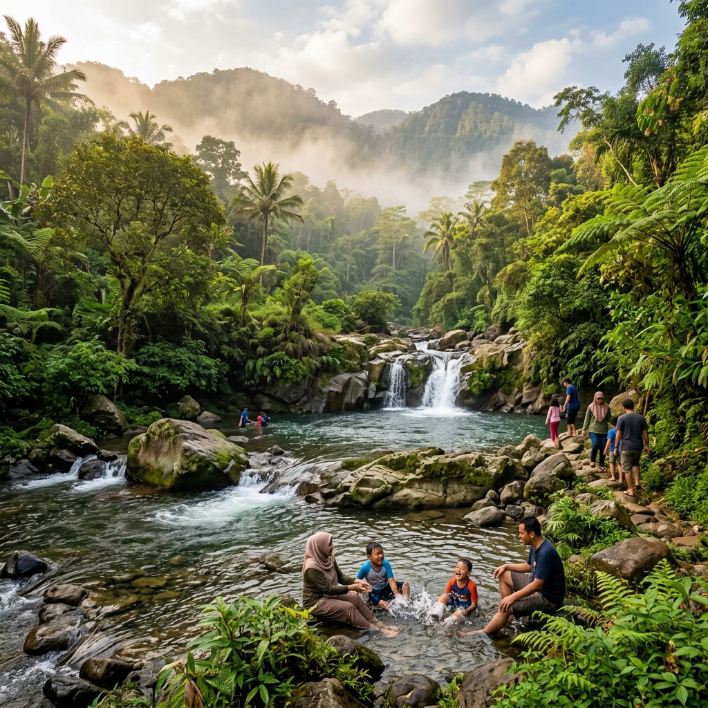
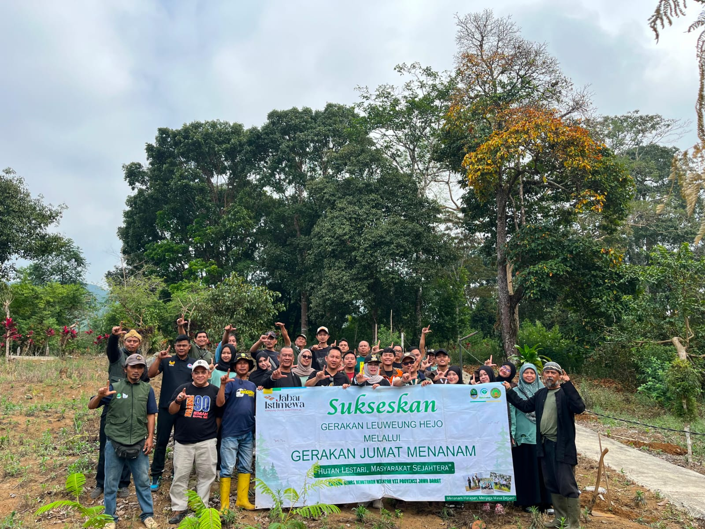
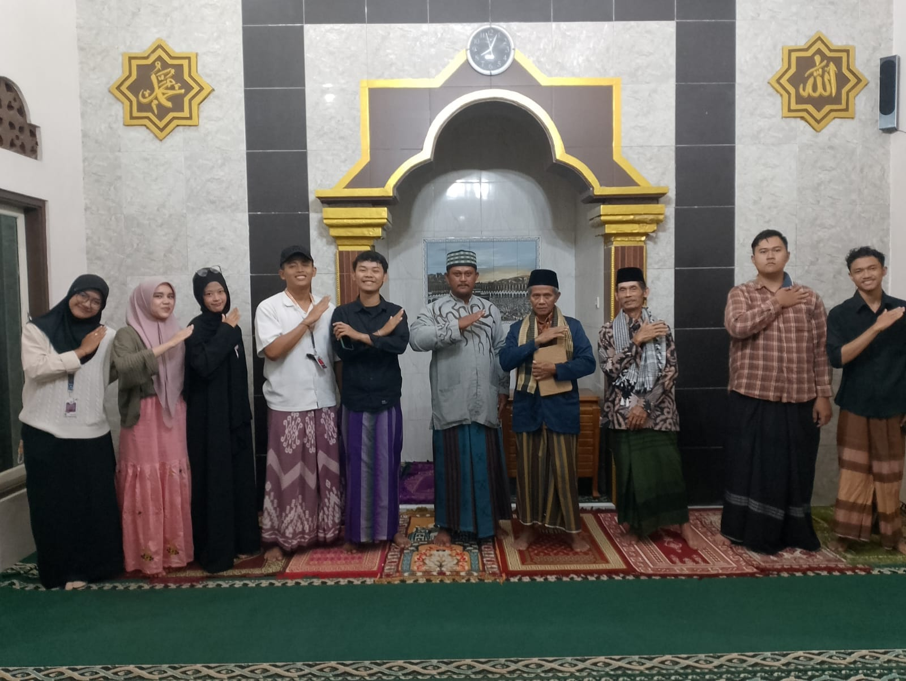
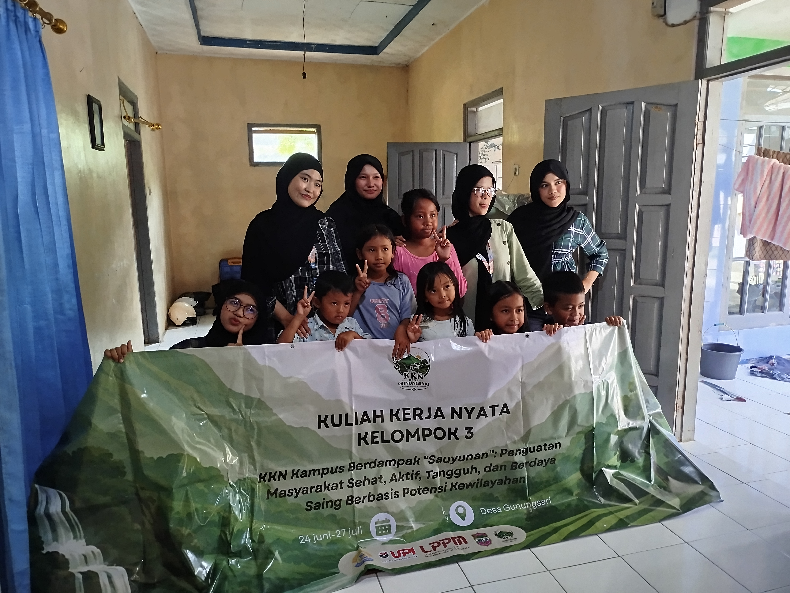
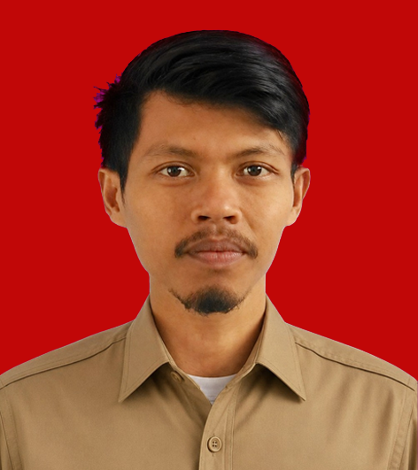

Portal Digital & WebGIS Desa Gunungsari
Kec. Sadananya
 Kab. Ciamis
Data Aktif
Kab. Ciamis
Data Aktif
Profil lengkap Desa Gunungsari, Kecamatan Sadananya, Kabupaten Ciamis — menyajikan jejak sejarah pembentukan, sambutan Kepala Desa, visi misi, data pokok kependudukan, kelembagaan, serta struktur aparatur desa.


Kepala Desa Gunungsari — Kecamatan Sadananya, Kabupaten Ciamis

Jejak Langkah
Pembentukan awal pemukiman warga berbasis pertanian di lereng utara Gunung Sawal.
Penetapan legalitas batas administrasi desa dalam Lembaran Daerah Kabupaten Ciamis.
Pengembangan sistem informasi geospasial WebGIS presisi dan penguatan transparansi publik.
"MEWUJUDKAN MASYARAKAT DESA GUNUNGSARI YANG UNGGUL, MAJU, MANUSIAWI, AMANAH, TAQWA (UMMAT) YANG BERLANDASKAN IMAN DAN TAQWA KEPADA ALLAH SWT."
Desa Gunungsari secara administratif terletak di zona utara Kecamatan Sadananya, Kabupaten Ciamis, Jawa Barat. Berada tepat di kaki kawasan konservasi Gunung Sawal, desa ini memiliki topografi perbukitan dan lembah sejuk dengan ketinggian rata-rata 450 – 750 meter di atas permukaan laut (mdpl).
DOKUMENTASI VISUAL
Panorama Gunung Sawal, budaya gotong royong, dan aktivitas kemasyarakatan






Desa Gunungsari berkomitmen meningkatkan efisiensi tata kelola pemerintahan dan transparansi publik melalui penerapan Sistem Informasi Geospasial (WebGIS). Seluruh titik fasilitas umum, batas administrasi 3 dusun, hingga potensi ekonomi masyarakat terintegrasi dalam peta digital interaktif presisi.
Perangkat Desa — Kepala Desa, Sekretariat, Kaur, Kasi, dan Kepala Dusun

Lembaga Legislatif Desa — Sejajar dengan Pemerintah Desa
BPD berkedudukan sejajar dengan Pemerintah Desa sebagai lembaga perwakilan warga (UU No. 6 Tahun 2014 tentang Desa). Fungsi BPD: membahas dan menyepakati rancangan peraturan desa, menampung dan menyalurkan aspirasi masyarakat, serta melakukan pengawasan kinerja Kepala Desa. BPD bukan bagian dari struktur eksekutif desa.
Aparat Keamanan Wilayah Desa Gunungsari
Visualisasi data demografi warga Desa Gunungsari
Program Studi Survei Pemetaan dan Informasi Geografis (SPIG) • Dalam rangka mendukung digitalisasi layanan informasi dan pengembangan WebGIS Desa Gunungsari.